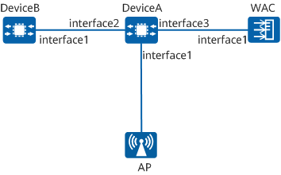

Example for Configuring Common APs to Go Online
Networking Requirements
As shown in Figure 1, the WAC and DeviceB communicate with the AP through DeviceA, and DeviceB functions as a DHCP server to assign IP address to the AP.
A CAPWAP tunnel needs to be established between the AP and WAC so that the AP can go online on the WAC.

In this example, interface1, interface2, and interface3 represent 10GE0/0/1, 10GE0/0/2, and 10GE0/0/3, respectively.
In this example, DeviceA and DeviceB use common campus switches, and an AirEngine 5776-26 functions as the AP.

Procedure
- Configure Layer 2 communication between devices.
# Configure the WAC and add 10GE0/0/1 to VLAN 100.
<HUAWEI> system-view [HUAWEI] sysname WAC [WAC] vlan batch 100 [WAC] interface 10ge 0/0/1 [WAC-10GE0/0/1] portswitch [WAC-10GE0/0/1] port link-type trunk [WAC-10GE0/0/1] port trunk allow-pass vlan 100 [WAC-10GE0/0/1] quit
# Add interfaces on DeviceA to VLAN 100.
<HUAWEI> system-view [HUAWEI] sysname DeviceA [DeviceA] vlan batch 100 [DeviceA] interface 10ge 0/0/1 [DeviceA-10GE0/0/1] portswitch [DeviceA-10GE0/0/1] port link-type trunk [DeviceA-10GE0/0/1] port trunk pvid vlan 100 [DeviceA-10GE0/0/1] port trunk allow-pass vlan 100 [DeviceA-10GE0/0/1] quit [DeviceA] interface 10ge 0/0/2 [DeviceA-10GE0/0/2] portswitch [DeviceA-10GE0/0/2] port link-type trunk [DeviceA-10GE0/0/2] port trunk allow-pass vlan 100 [DeviceA-10GE0/0/2] quit [DeviceA] interface 10ge 0/0/3 [DeviceA-10GE0/0/3] portswitch [DeviceA-10GE0/0/3] port link-type trunk [DeviceA-10GE0/0/3] port trunk allow-pass vlan 100 [DeviceA-10GE0/0/3] quit
# Add the interface on DeviceB connected to DeviceA to VLAN 100.
<HUAWEI> system-view [HUAWEI] sysname DeviceB [DeviceB] vlan batch 100 [DeviceB] interface 10ge 0/0/1 [DeviceB-10GE0/0/1] portswitch [DeviceB-10GE0/0/1] port link-type trunk [DeviceB-10GE0/0/1] port trunk allow-pass vlan 100 [DeviceB-10GE0/0/1] quit
- Configure DeviceB as a DHCP server to assign IP addresses to APs.
# Configure DeviceB as a DHCP server to assign IP addresses to APs through the IP address pool on VLANIF 100.
[DeviceB] dhcp enable [DeviceB] interface vlanif 100 [DeviceB-Vlanif100] ip address 10.23.100.2 24 [DeviceB-Vlanif100] dhcp select interface [DeviceB-Vlanif100] dhcp server excluded-ip-address 10.23.100.1 [DeviceB-Vlanif100] quit
- Configure APs to go online on the WAC.
# Create an AP group to which APs with the same configuration are to be added.
[WAC] wlan [WAC-wlan] ap-group name ap-group1 [WAC-wlan-ap-group-ap-group1] quit
# Create a regulatory domain profile, configure the WAC country code in the profile, and bind the profile to the AP group.
[WAC-wlan] regulatory-domain-profile name domain1 [WAC-wlan-regulate-domain-domain1] country-code cn Warning: Modifying the country code will clear the channel and power configurations of radios, and requires the APs to be restarted if they run V200R019C10 or earlier. Continue? [Y/N]:y [WAC-wlan-regulate-domain-domain1] quit [WAC-wlan] ap-group name ap-group1 [WAC-wlan-ap-group-ap-group1] regulatory-domain-profile domain1 Warning: This configuration change will clear the channel and power configurations of radios, and may restart APs. Continue?[Y/N]:y [WAC-wlan-ap-group-ap-group1] quit [WAC-wlan] quit
# Configure the WAC's source interface.
[WAC] interface vlanif 100 [WAC-Vlanif100] ip address 10.23.100.1 24 [WAC-Vlanif100] quit [WAC] capwap source interface vlanif 100 Set the DTLS PSK(contains 8-32 plain-text characters, or 128 or 148 cipher-text characters that must be a combination of at least tw o of the following: lowercase letters a to z, uppercase letters A to Z, digits, and special characters):******** Confirm PSK:******** Set the user name for FIT APs(The value is a string of 4 to 31 characters, which can contain letters, underscores, and digits, and m ust start with a letter):******** Set the password for FIT APs(plain-text password of 8-128 characters or cipher-text password of 128-268 characters that must be a co mbination of at least three of the following: lowercase letters a to z, uppercase letters A to Z, digits, and special characters):****** Confirm password:******** Set the PSK of the global offline management VAP(plain-text password of 8-63 characters or cipher-text password of 128-188 character s that must be a combination of at least two of the following: lowercase letters a to z, uppercase letters A to Z, digits, and speci al characters):******** Confirm PSK:********
# Import an AP on the WAC and add the AP to the AP group ap-group1. Assume that the AP's MAC address is 00e0-fc12-3456 (if the MAC address obtained is in the format of 00e0fc123456, use the format of 00e0-fc12-3456 in the configuration). Configure the AP name based on the AP's deployment location, so that users can easily know where the AP is deployed based on its name. For example, if the AP with the MAC address 00e0-fc12-3456 is deployed in area 1, name the AP area_1. The default AP authentication mode is MAC address authentication. If the default settings are retained, you do not need to run the ap auth-mode mac-auth command.
You are advised to configure the AP type when importing the AP offline on the WAC. In this example, the type ID of the AP AirEngine 5776-26 is 216. Adjust the configuration based on the actual type of APs deployed on the network. For the mapping between type-id and type, download Quick Reference for WLAN AP Version Mapping and Models and view the AP type IDs on the AP Type Name and IDs sheet.
[WAC] wlan [WAC-wlan] ap auth-mode mac-auth [WAC-wlan] ap-id 1 type-id 216 ap-mac 00e0-fc12-3456 [WAC-wlan-ap-1] ap-name area_1 [WAC-wlan-ap-1] ap-group ap-group1 Warning: This operation may cause AP to go offline and then online. If the country code changes, it will clear channel, power and antenna gain configurations of the radio, Whether to continue? [Y/N]:y [WAC-wlan-ap-1] quit [WAC-wlan] quit
Verifying the Configuration
# After the AP is powered on, run the display ap all command to check the AP status. If the State field displays nor, the AP has gone online.
[WAC] display ap all
Total AP information:
nor : normal [1]
Extrainfo : Extra information
Total: 1
-----------------------------------------------------------------------------------------------------------------------
ID MAC Name Group IP Type State STA Uptime ExtraInfo
-----------------------------------------------------------------------------------------------------------------------
1 00e0-fc12-3456 area_1 ap-group1 10.23.100.254 AirEngine5776-26 nor 0 3D:18H:37M:13S -
-----------------------------------------------------------------------------------------------------------------------
Configuration Scripts
WAC
# sysname WAC # vlan batch 100 # interface Vlanif100 ip address 10.23.100.1 255.255.255.0 # interface 10GE0/0/1 portswitch port link-type trunk port trunk allow-pass vlan 100 # capwap source interface vlanif 100 capwap dtls psk %+%##!!!!!!!!!"!!!!"!!!!*!!!!a4O4$.&PxR*P'D0AgkgU%ja,;U$7!E)D}sA!!!!!2jp5!!!!!!;!!!!YI!n.!e`{34:J7Z|W[+ZgW1M%p`fCAOAhSJ!!!!!%+%# # wlan regulatory-domain-profile name domain1 ap-group name ap-group1 regulatory-domain-profile domain1 ap-id 1 type-id 216 ap-mac 00e0-fc12-3456 ap-sn 210235554710CB000042 ap-name area_1 ap-group ap-group1 # return
- DeviceA
# sysname DeviceA # vlan batch 100 # interface 10GE0/0/1 portswitch port link-type trunk port trunk pvid vlan 100 port trunk allow-pass vlan 100 # interface 10GE0/0/2 portswitch port link-type trunk port trunk allow-pass vlan 100 # interface 10GE0/0/3 portswitch port link-type trunk port trunk allow-pass vlan 100 # return
- DeviceB
# sysname DeviceB # vlan batch 100 # dhcp enable # interface Vlanif100 ip address 10.23.100.2 255.255.255.0 dhcp select interface dhcp server excluded-ip-address 10.23.100.1 # interface 10GE0/0/1 portswitch port link-type trunk port trunk allow-pass vlan 100 # return